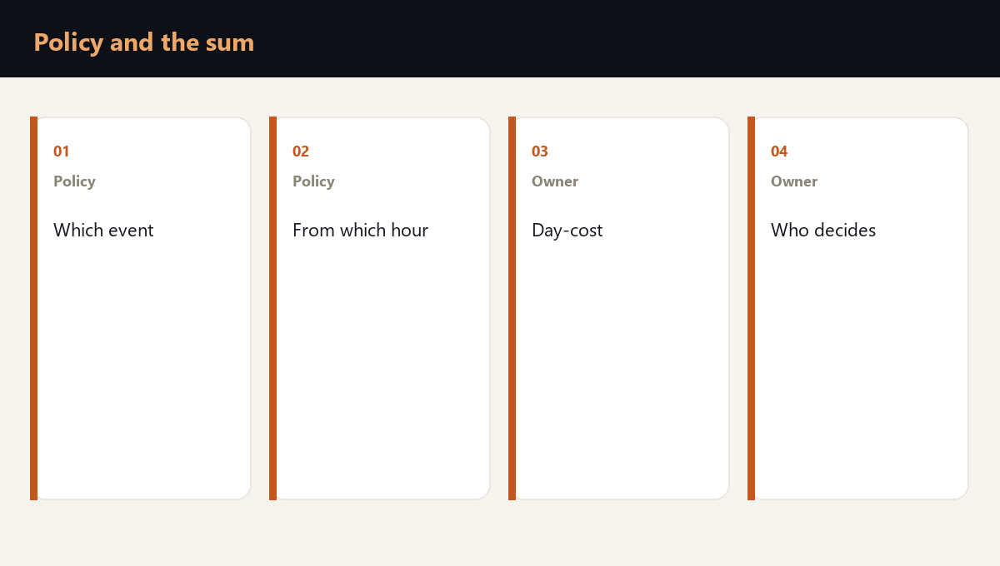

Downtime insurance after a drone strike repays part of an agreed loss on agreed terms. It does not assign roles, does not write to the supplier and does not restore output. The owner calculates and arranges those three things, before the conversation about the policy.

What a policy usually does
A downtime policy describes which interruption it recognises, from which hour it starts counting, and which documents it asks for. The wording differs from contract to contract. Read the definition of the event, the time deductible and the list of exclusions.
| Question for the policy | Why the owner asks |
|---|---|
| Which event is recognised | Whether a site stop is inside the wording |
| From which hour the clock runs | Whether the pause matches your day of downtime |
| Which evidence is required | The decision log and the correspondence are prepared in advance |
| What is excluded | Downtime for that reason stays with the company |
- The policy is read next to the cost of your own day.
- A policy pause longer than the downtime you can bear leaves a gap.
- An exclusion at the end of the contract cancels a promise at the beginning.
- The payment arrives after the documents. Output has to be held up until then.
The calculation that stays with the owner
The owner writes the day-cost by node, the share of output that is lost for good, the penalty and the cost of returning to the previous throughput. That set of four serves both the policy and the decision of what to duplicate.
The insurer does not run the shift in that hour and does not explain a new date to the customer. If the day has not been costed, the company learns the size of the gap together with the event.
The policy is a layer of money after the event. The node map, the roles and a second shipping path are the layer that makes the event smaller for the business.
How the check joins the policy and the sum
The drone strike readiness check puts the wording of your cover next to the day-cost of the site: where the policy starts counting, which downtime stays with the company, and which decision the owner makes alone.
Frequently asked questions
It does not replace a plan. The policy pays on its own terms after the documents. The stop, the letters and output on that day stay with the company.
A decision log with times, the correspondence with the customer about the new date, and the calculation of the lost day. These are the same records the director needs.
There is nothing to compare it with. A limit and a waiting period make sense only next to your day figure and to how many days the company can live on its own cash.
Is your team ready for the first hour of a crisis?
You test a plan by running a scenario. Reading it is not enough. The assessment shows the gaps, and the corporate format works through them with your team on your own processes.